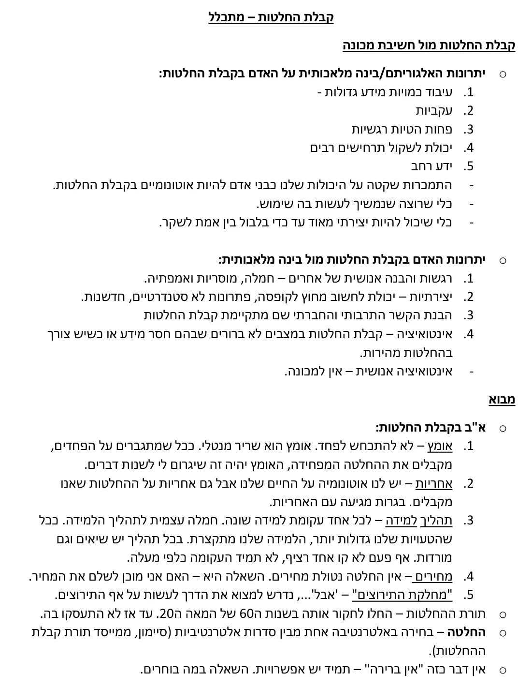
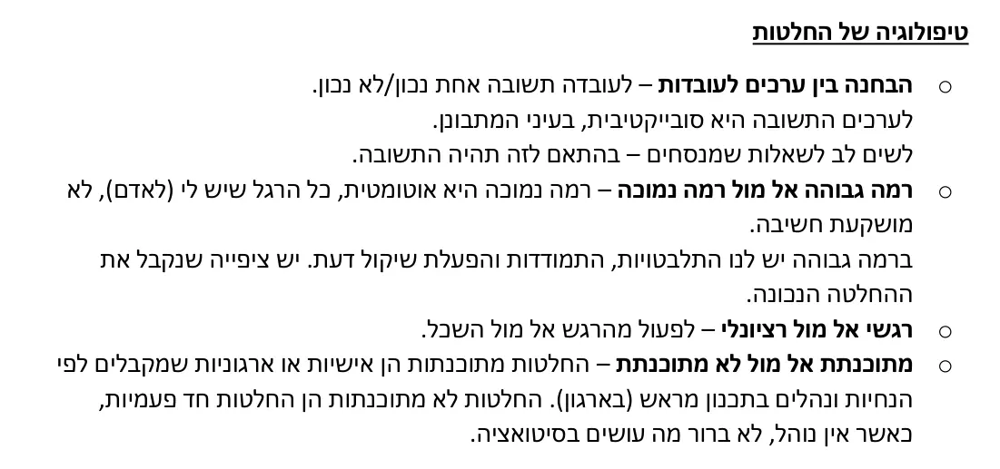
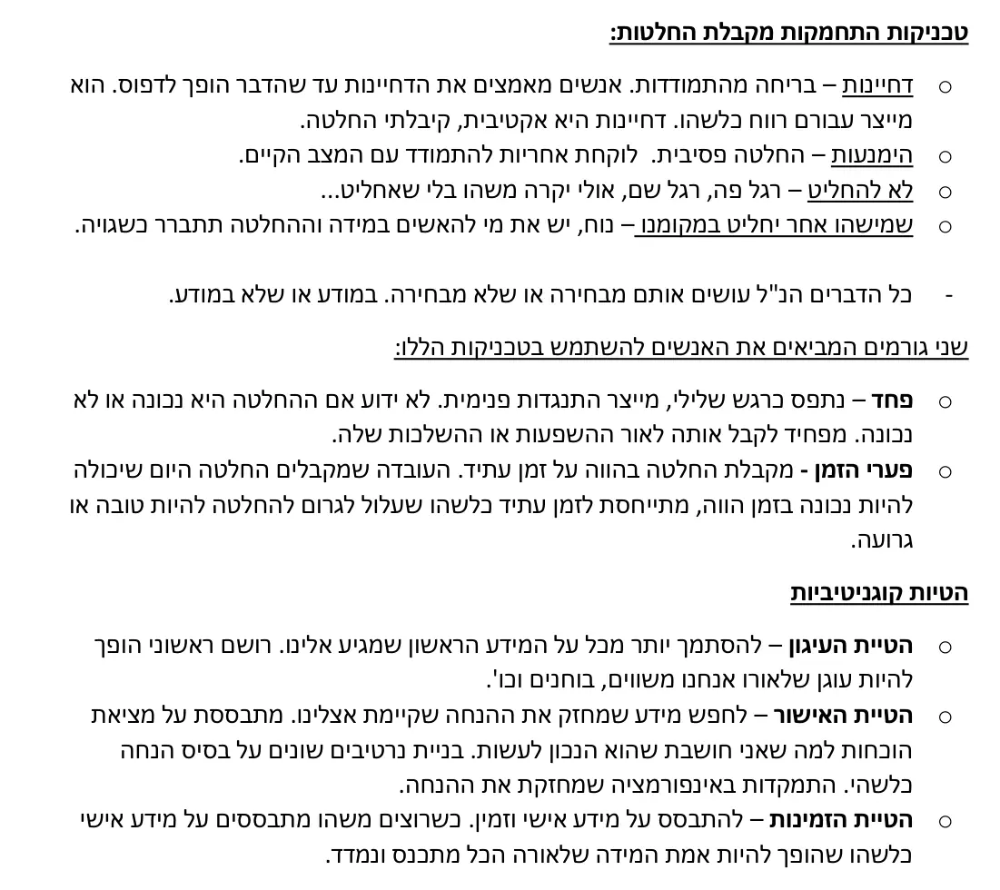
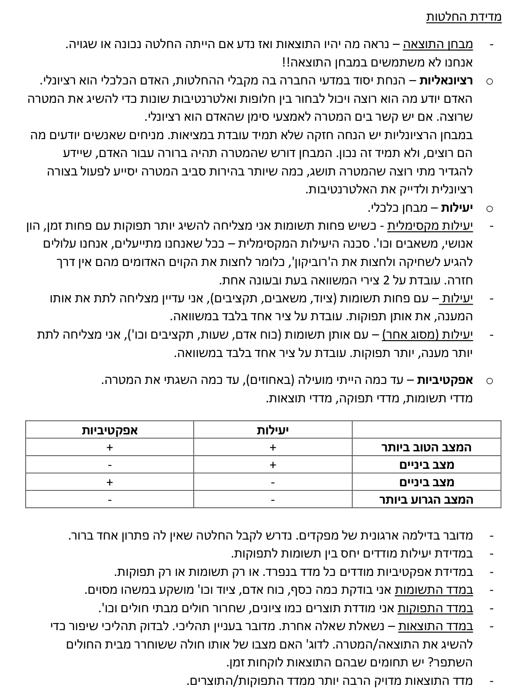
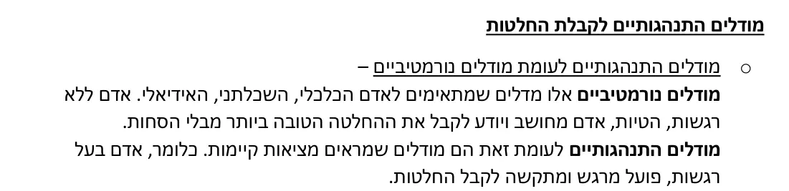
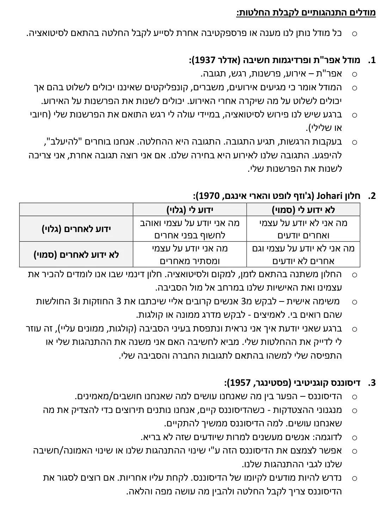
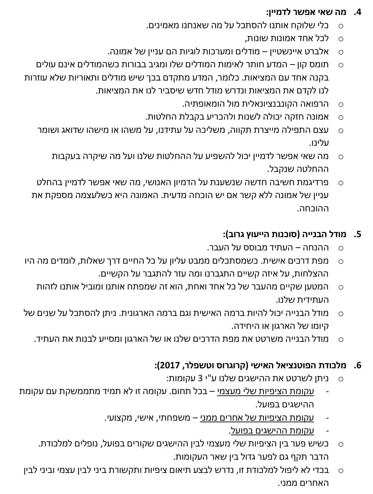
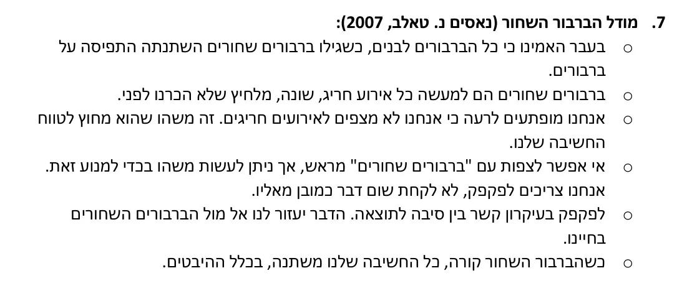

קבלת החלטות – שיעור 4
(המשך מודלים התנהגותיים לקבלת החלטות)
עיקרון פארטו (1923):
בתופעות רבות 80% מהפעילות מקורם ב20% מהגורמים הפעילים.
כלכלן איטלקי שפעל במאה ה20, במחקריו מצא עיקרון של 80% 20%.
אם אני רוצה להסביר 80% מתופעה מסוימת, מכל הגורמים והמשתנים שיכולות להסביר 80% מהתופעה, 20% הם הגורמים הפעילים, בהם אני צריכה להשקיע. ברגע שהבנתי מהם הגורמים הפעילים – פתרתי 80% מהבעיה.
סיבה שחוזרת על עצמה כמו למשל שילוט מתאים – זוהי סיבה שחוזרת על עצמה במרבית תאונות הדרכים. אם אשקיע בשילוט מתאים – אמנע את שיעור תאונות הדרכים ואפתור את רוב הבעיה שלי.
צריך לזהות את ה20%.
שיקול דעת מקצועי:
מה שמצופה בכל תפקיד – לא משנה התחום.
שני מקבלי החלטות שהכשרתם מקצועית וארוכה מאוד, אין ביטחון מלא שהאנשים הללו לא יטעו – אנליסטים ורופאים (מחקר ילדים וניתוח להוצאת שקדים).
הטיית שיעור הבסיס – משפיעה לרעה על שיקול הדעת שלנו. מצב שבו אנחנו שופטים דברים כדומים על בסיס של תכונות שטחיות. אנחנו עושים זאת כל הזמן.
אם עושים השוואות, צריך לקבל החלטות אחרות לחלוטין. לא להשוות את אותו אדם ביחס לאחרים הדומים לו.
שיקול הדעת המקצועי נבנה בהתאם להשוואות ונדרש להיזהר.
שיקול דעת בניהול הזמן (covey,2004):
להקדיש זמן לארבע הפעולות הבאות:
פעולות דחופות וחשובות
פעולות חשובות ולא דחופות
פעולות דחופות ולא חשובות
פעולות לא חשובות ולא דחופות
ככל שאשקיע יותר בפעולות חשובות ולא דחופות, אני מונעת מהפעולה החשובה להפוך לדחופה. זהו ניהול זמן נכון.
שיקול דעת מקצועי (Tichy ,Bennis, 2007):
בדקו אנשים בדרגים שונים, ראיינו אותם, עשו עליהם תצפיות ובדקו איך אותם אנשים בדרג סמכות בתוך הארגון מפעילים שיקול דעת מקצועי?
שני ממצאים לניסוי:
מהם הנושאים בהם נדרשת הפעלת שיקול דעת מקצועית? שלושה נושאים:
החלטות שנוגעות לאנשים – קידום, פיטורים, עבודת צוות וכו'.
אסטרטגיה – תוכניות עבודה אסטרטגיות.
ניהול משברים – היעדר כוח אדם, משבר תדמיתי, תקציבי ועוד.
אם נקבל החלטות שגויות לגבי אנשים – לא נוכל ליצור תוכניות עבודה אסטרטגיות ולא נדע לנהל משברים.
לקבל החלטות חשובות לגבי אנשים – החשוב ביותר.
איך למעשה להפעיל שיקול דעת מקצועי? איך לעשות את זה נכון?
שלושה שלבים:
שלב ההכנה – מצריך ראש גדול ופתוח. לקלוט אותות מהסביבה בתוך ומחוץ לארגון, לדעת לאיפה רוצים להגיע, מה העתיד אליו רוצים שהיחידה/הארגון יגיע, להיות מונעים מזה. דבר נוסף, לעשות הבחנה בין עיקר לטפל, לחתוך דרך מורכבות העניין. אם לא תהיה הפרדה, לא יינתן מענה לעיקר. לקבוע אבני דרך עיקריות. לגייס שותפים, בעלי עניין, לדאוג לדבר באותה השפה, לתמרץ ולהניע עובדים וכן לא להיות מקובע, לנצל רעיונות טובים מכל מקום.
שלב ההכרעה – קבלת החלטה ברורה – כן או לא ולדעת להסביר מדוע קיבלתי את החלטה זו.
שלב הביצוע – המנהלים צריכים להישאר מעורבים, לא מתערבים. לתת תמיכה, לבדוק מה קורה עם אבני הדרך שנקבעו, תקציבים, עמידה בלוחות זמנים וכן הזמנת משובים תוך כדי ולעשות התאמות נדרשות בהתאם.
החשוב ביותר הוא השלב הראשון – ההכנה.
תהליך הפעלת שיקול דעת מקצועי:
לחוש ולזהות – חושים מחודדים.
למסגר ולקרוא בשם – מסגור חשוב מאוד.
לגייס ולהיערך – לגייס משאבים ולהיערך לקראת קבלת ההחלטה. אם מתקשה לגייס משאבים, כוח אדם וכו' זה אומר שכנראה לא עשיתי נכון את השלב הקודם. לא גייסתי נכון ולא נערכתי נכון.
הכרעה – קבלת ההחלטה והסבר מדוע קיבלתי אותה.
נעשה שזה יקרה – לוודא שזה יקרה, על אף עיכובים. אם לא קורה כנראה שלא הסברתי דחיפות, לא הבנתי למה חשוב, לא עשיתי נכון את השלב הקודם.
למד והתאם את עצמך.
הטייס האוטומטי (תיאור מצב ולא מודל – ארנולד, 2018):
העדפות לא מודעות
יעילות מנטאלית
היעדר שליטה
היעדר כוונה מודעת
אנחנו לא חושבים על מה שאנחנו עושים.
היומיום שלנו מורכב מהרבה טייסים אוטומטיים. הטייס האוט' זה חזרתיות על אותן התנהגותיות.
החזרתיות נוחה. המוח עצלן ולא רוצה להתאמץ.
משתמשים בו כי זה עוזר לנו לייעל את השימוש במשאבים קוגניטיביים. באפס מאמץ.
מדובר בהרגל, הרבה פעמים לא מודעים לחזרתיות הזו ולא חושבים על זה.
המוח מתנגד לשינויים, הדרך להתגבר על הטייס אוט' עוברת דרך מיקרו החלטות.
מיקרו החלטות
החלטה קטנה מזערית שלא מפעילה את ההתנגדות של המוח. לא מפעילה כוח רצון. עוברת מתחת לרדאר של המוח.
כאן נגמר הסיכום. השיעור הבא יתווסף כאן כשהסיכום יעלה.